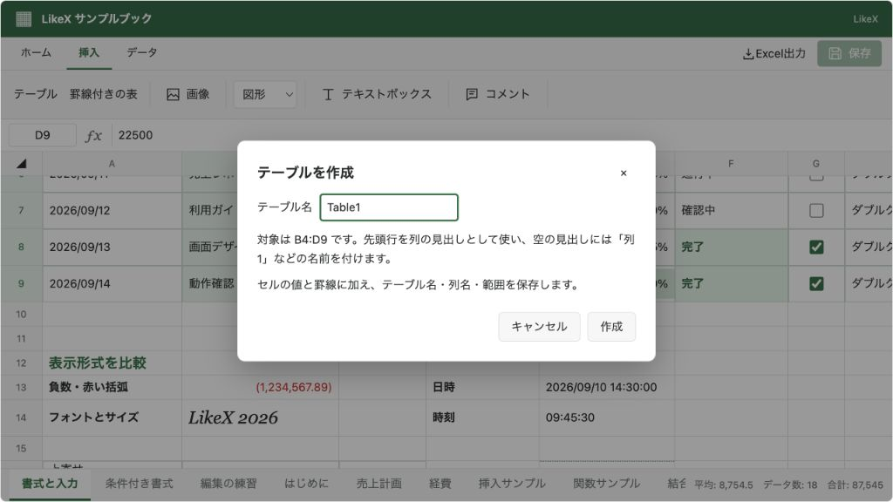

@likex/spreadsheet
テーブル・罫線付きの表
ヘッダーと明細から表を配置し、構造化テーブルと通常のセル書式を用途に合わせて選びます。
画面例を見る ↓ヘッダーと明細データから表を配置する方法は2つあります。tables.insert は名前・列・範囲を持つテーブル、cells.writeTable は通常のセルに値と罫線を設定します。
| 用途 | コマンド | JSONに残るもの |
|---|---|---|
| テーブルとして取得・管理したい | tables.insert | セルと、シートの tables にID・名前・列・範囲 |
| 見た目が表になればよい | cells.writeTable | 通常のセルの値・書式。テーブル定義は作らない |
画面なしでテーブルを作る#
import { createWorkbook, createSpreadsheetSession } from "@likex/spreadsheet/model";
const session = createSpreadsheetSession(createWorkbook());
const sheetId = session.getWorkbook().sheets[0].id;
const result = session.execute({
type: "tables.insert", sheetId, name: "Sales",
target: { row: 1, column: 1 }, // B2
headers: ["商品", "金額"],
data: { type: "rows", values: [["商品A", "1200"], ["商品B", "2400"]] },
rowNumbers: { header: "No.", start: 1 },
headerStyle: { background: "#217346", color: "#ffffff" },
onConflict: "error",
});
if (!result.ok) throw new Error(result.message);
const receipt = result.results[0];
console.log(receipt.tableId, receipt.range); // テーブルIDとB2:D4の範囲
if (receipt.type === "tables.insert") {
console.log(receipt.placement); // { nextRow: 4, nextColumn: 4 }
}
const table = session.getTableByName("Sales");
console.log(table?.columns.map(column => column.name)); // ["No.", "商品", "金額"]同じコマンドを applySpreadsheetCommands、または表示中の await ref.current.executeAsync(command) へ渡せます。GUIでは編集許可・入力規則・Undo/Redo・変更通知を通ります。
書き込みに使う引数#
tables.insert と cells.writeTable は SpreadsheetTableWriteOptions を共有します。テーブル作成だけは追加で name が必要です。
| 引数 | 型・既定値 |
|---|---|
sheetId | 対象シートのID |
target | { row, column }。表の左上を0始まりで指定 |
headers | readonly string[]。連番列を除くヘッダー |
data | SpreadsheetTableData。下記の明細データ |
headerStyle? | { background?: string, color?: string }。省略すると既存の色を維持 |
rowNumbers? | false または { header?: string, start?: number }。指定時は左端に連番列を追加。見出しの既定は No.、開始値は1 |
onConflict? | "error" / "overwrite" / "skip"。既定は overwrite |
表全体に1pxのグレー（#d1d5db）の実線罫線を設定します。その他の既存書式・入力規則・コメントは保持します。明細の値・数値・数式は文字列です。連番は通常の整数値を入れるもので、後の行挿入で自動採番する機能ではありません。
// 二次元配列
const rows = { type: "rows", values: [["商品A", "1200"]] } as const;
// CSV / TSVは明細だけを指定します。ヘッダーはheadersへ別途渡します。
const csv = { type: "csv", text: '商品A,1200\n"商品B,セット",2400' } as const;
const tsv = { type: "tsv", text: "商品A\t1200\n商品B\t2400" } as const;CSV/TSVは引用符内の区切り文字・改行、二重の引用符に対応します。各行の列数は headers.length と一致させます。data: { type: "rows", values: [] } ならヘッダーだけの表になります。
既存の値と結果#
既存の非空の値を別の値へ変える場合を競合とします。同じ値や空セルは競合しません。error は全体を中止し、skip は競合セルの値・書式を残します。構造化テーブルのヘッダーをスキップすると列定義と一致しなくなるため、その場合は WRITE_CONFLICT で全体を中止します。詳しくは書き込み時の競合を参照してください。
成功結果の results[i] に range、placement、write が入ります。tables.insert には生成した tableId も入ります。write.changedCount は値が変わったセル数で、罫線やテーブル定義だけの変更は数えません。ブック全体の変更判定は result.changed を使います。
getTable(workbook, tableId) / getTableByName(workbook, name) は定義に sheetId とA1表記の address を添えた SpreadsheetTableInfo を返し、見つからなければ undefined です。getTables(workbook, sheetId?) は配列を返し、該当しなければ [] です。値は定義に複製せず、getRange(workbook, table.sheetId, table.range) で取得します。
定義を削除する#
const table = session.getTableByName("Sales");
if (table) {
const result = session.execute({ type: "tables.delete", sheetId: table.sheetId, tableId: table.id });
if (!result.ok) throw new Error(result.message);
}既定は定義だけの削除で、セルは残ります。clear: "values" は定義を外して値をクリアし、clear: "all" は書式・罫線・コメント・入力規則なども取り除きます。周囲のセルの位置は詰めません。結果には削除対象の tableId と range が入ります。
GUI・機能設定・制限#
「挿入」の「テーブル」は選択範囲の先頭行をヘッダーにし、残りを明細として登録します。名前を指定するダイアログが開きます。「罫線付きの表」は同じ選択範囲に通常のセルとして表を作ります。空のヘッダーは「列1」などで補います。離れた複数範囲や結合セルには作成できません。
両方の書き込みには features.tables と features.formatting が必要です。既定はONで、読み取り専用では作成・削除できません。features.tables: false でも既存の定義とセルは保持します。
テーブル名はブック全体で一意で、名前付き範囲と重複できません。構造化テーブルの列名は空欄・改行なしの255文字以内で、大文字・小文字の違いだけでは重複できません。見出し・連番を含めて1操作10,000セルまでで、シートをはみ出す場合は行・列を先に追加します。既存のテーブルに重なる新しいテーブルは作れません。
範囲の手前への行・列挿入では位置を移動し、内部への行挿入では範囲を広げます。テーブル内部の列の挿入・一部列の削除は、先にテーブル定義を外してください。ヘッダー行だけの削除も拒否します。ヘッダーを空欄にする変更など、定義が不整合になる操作は拒否します。XLSX出力ではExcelのテーブルとして保持します。LikeX内のフィルター操作・集計行・構造化参照の数式（=SUM(Sales[金額])）は未対応です。
画面例
{kind=link}
